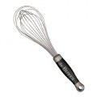
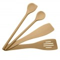

Ingrédients :
- 250 g de farine tamisée ou fluide.
- 4 oeufs.
- 450 ml de lait légèrement tiède.
- 2 c. à soupe de rhum ambré ou de fleur d'oranger, ou 1/2 verre de bière blonde.
- 1 c. à soupe d' extrait de vanille ou 1 sachet de sucre vanillé.
- 2 c. à soupe de sucre.
- 1 pincée de sel.
- 50 g de beurre fondu.
Etapes :
- Faites fondre le beurre au micro-ondes et faites légèrement chauffer le lait qui doit être à peine tiède (ça évite les grumeaux).
- Mélangez la farine tamisée, le sucre, le sel dans un grand bol. Vous pouvez remplacer 50 g de farine par la fécule de maïs pour plus de légèreté.
- Ajoutez les oeufs, le beurre fondu, puis progressivement le lait, en battant avec un fouet bien pour éviter la formation des grumeaux.
- Ajoutez la bière ou le rhum, ou encore l'eau de fleur d'oranger, la vanille et laissez reposer 30 minutes avant d'attaquer la cuisson.
- Faîtes chauffer une noix de beurre dans la poêle et disposez une louche de pâte.
- Faites cuire vos crêpes de chaque côté, qu'elles soient bien dorées.
- Au fur et à mesure, réservez dans une assiette en couvrant avec une feuille de papier aluminium pour les garder chaudes et moelleuse.